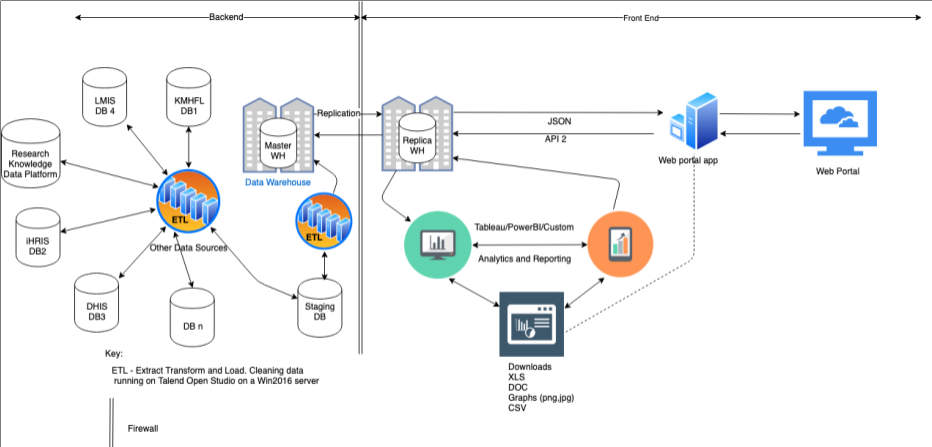

Architecture¶
The integrated Kenya Health and Research Observatory illustrated below comprises of a back-end data warehouse that is inter-operable with existing Health Information Systems. Once data is extracted from aggregate systems, it is loaded into the warehouse and its replicas for visualization on the web portal and Business Intelligence Tools like Tableau and Power BI. The Figure 1 below shows a description of how the architecture is set up:
These databases labeled (DB1 to BD n) represent the different data sources from which data is aggregated and cleaned before a clean copy of the data is produced. To start with KHRO is linked to primary data sources like KHMFL (DB1), DHIS2 (DB3), LMIS (DB4) and open to more integrations. Regardless of their architectural or semantic differences, these systems are integrated into a complex schema using ETL (Extract-Transform-Load) tools to provide rich response and visualization for a scenario like: facility MSH001 in CountyX with X number of trained staff and Y drugs/Z commodities at the reporting increase or decrease in trend Z for indicator Q in Period XX To provide response to such a scenario, KHRO presents complex information in a simplified visual format like graphs, maps, and tables that make data accessible and filterable to meet the specific mandates or interests. The platform also present information on knowledge products with possibility of expanding these capabilities
Back-end¶
Seeding databases (DB1, DB2,DB3, DB4, DBn). These databases represent the different data sources from which data will be aggregated and cleaned before a clean
copy of the data is produced. These include the DHIS2, KMFL, LMIS, iHRIS and other sources. Daemons make periodic calls to pull and push data. Data may also be manually populated using a data capture tool.
ETL is short for extract, transform, load, three database functions that are combined
into one tool to pull data out of one database and place it into another database. Extract is the process of reading data from a database. In this stage, the data is collected, often from multiple and different types of sources. Transform is the process of converting the extracted data from its previous form into the form it needs to be in so that it can be placed into another database. Transformation occurs by using rules or lookup tables or by combining the data with other data. Load is the process of writing the data into the target database.
Staging Database - staging environment or staging site, serves as a temporary hosting
of data. A second ETL or cleaning of data done to make sure all the data is matching to the required schema
Master Warehouse (WH) - Used for maintaining the data that is used for reporting and
data analysis, and core component of business intelligence in the given architecture
Firewall - with Access control list to manage how, when and who can access data from
the mater warehouse
Front-end¶
Web portal app - the primary interface providing access to the system aggregate data
and reports